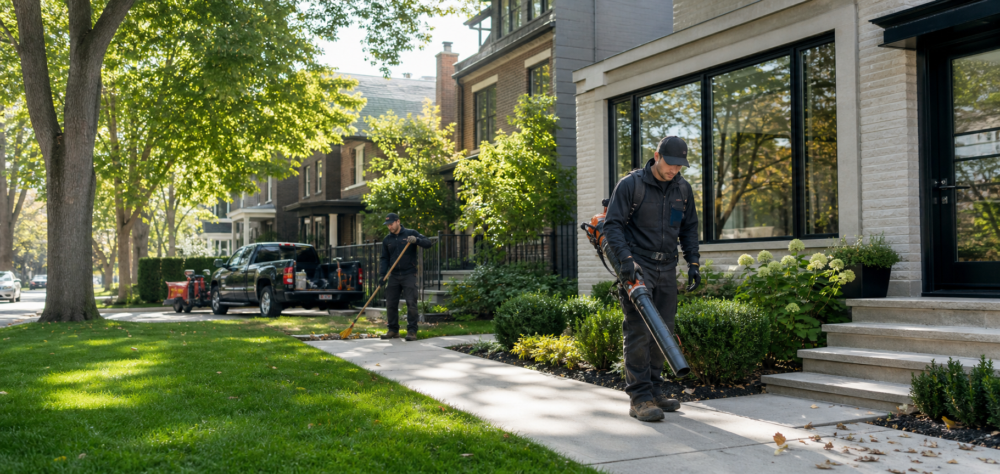
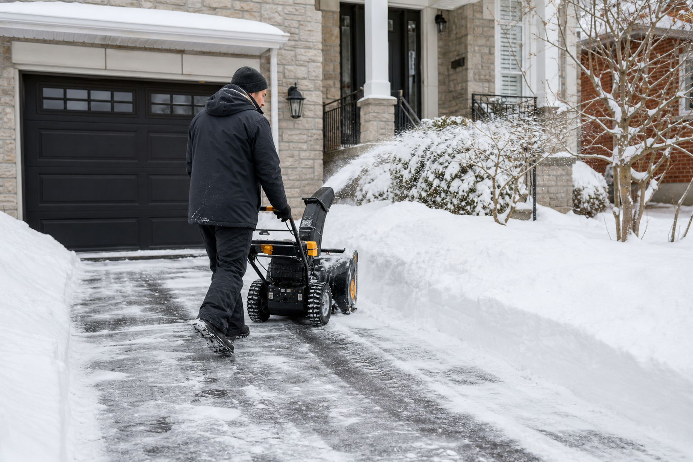
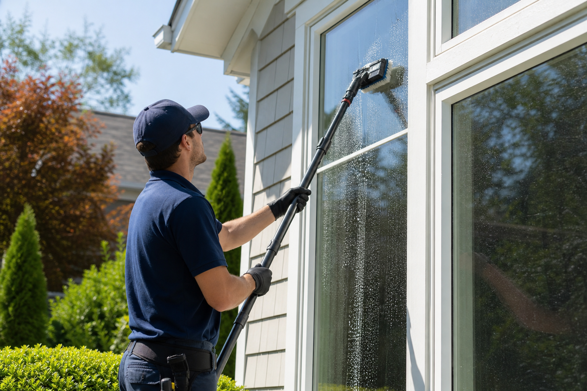

Lawn care
Routine mowing, trimming, edging, and seasonal yard cleanup for clean, healthy curb appeal.
View lawn careServices
Book one-time or recurring help for homes, rental properties, storefronts, and commercial spaces.

Routine mowing, trimming, edging, and seasonal yard cleanup for clean, healthy curb appeal.
View lawn care
Winter clearing for driveways, sidewalks, walkways, entrances, and commercial access points.
View snow removal
Exterior window washing for brighter glass and a more polished property exterior.
View window washingScheduled mowing with clean lines and consistent finish quality.
Debris removal, leaf cleanup, and property tidying for seasonal transitions.
Spring, summer, fall, and winter service plans built around property needs.
Reliable support for homeowners across Toronto.
Professional exterior care for storefronts, offices, rentals, and shared-access properties.
Call for snow removal availability when access is blocked or timing matters.
Free quote
Send the property location and a few details. Lawn Clinic Plus will help match the right service.